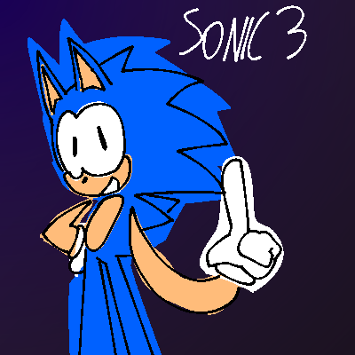

GenEmulator Roms
The unofficial website where you can get free GenEmulator roms!
The GenEnumator emulator was only meant to be used for building, testing and debugging Genesis and Sega CD. But people said there was no point of having it and they might as well use Kega Fusion and other emulators. That made GeneTeam (GenEmulator) lose a lot of money. On 1998, official Genesis (legal) games were on there official website. A few people were happy but some were not. You had to pay for the games. This led to lots of piracy. Many piracy websites, unlike this one, flew into existence. GeneTeam has currently taken care of crackedsoftwares.net, muehehehpiracy.yuh, and others. This is an unofficial website that has obtained the ROMs from a few websites that are now taken down and bought from the Official Website.
Sonic The Hedghehog (official)
"its a sonic !!"
Sonic The Hedghehog 2 (official)
"its a sonic.. the SEQUEL !!!!!!! 🤑🤑🤑😮😮😮😮"
Sonic The Hedghehog 3 (unofficial)
"falt is here"